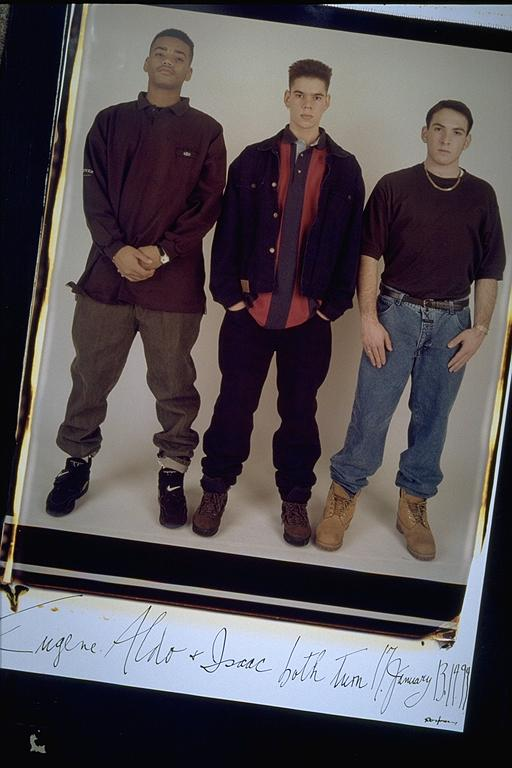

Pals: Boys Who Grew Up Together
elsadorfman.com/pals
Aldo: My jean jacket outfit, man, was I happy when I bought it. But I really wore it rarely, cause I liked it so much. Makes a lot of sense, huh. When you're young, there is so much you don't know, but not knowing that, makes you feel like you know so much. Doesn't make sense, maybe, but for me, it makes all the sense in the world.
And jewelry. I had almost failed to mention what an important role this played in our lives for a few years. I guess it was my pocket that felt it the most. When we were in high school, gold was really popular, and as always we had to have it. I guess what was most interesting, though, was buying and trading it. We learned a lot about getting ripped off and learning to appreciate saved money. At least saved long enough to buy something else.

elsad@comcast.net